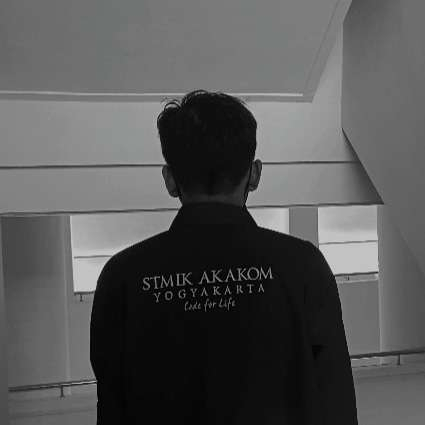

Tentang Saya
Nama: Muhammad Jepri
NIM : 203110006
Program Studi : Rekayasa Perangkat Lunak Aplikasi
Fakultas : Teknologi Informasi
Kontak Saya
Pendidikan

Universitas Teknologi Digital Indonesia (UTDI) adalah perguruan tinggi swasta di D. I. Yogyakarta yang merupakan perubahan bentuk dari STMIK Akakom. Sejarah berdirinya UTDI dimulai dari Akademi Aplikasi Komputer (AKAKOM) tahun 1979, lalu berkembang menjadi AMIK Akakom pada tahun 1985, selanjutnya menjadi STMIK Akakom pada tahun 1992, dan sekarang menjadi UTDI mulai tahun 2021.
Program Studi Yang ada DI Universitas Teknologi Digital Indonesia yaitu :
- S2-Teknologi Informasi
- S1-Informatika
- S1-Sistem Informasi
- S1-Teknik Komputer
- S1-Manajemen Ritel
- S1-Bisnis Digital
- D3-Rekayasa Perangkat Lunak Aplikasi
- D3-Teknologi Komputer
- D3-Sistem Informasi Akuntansi